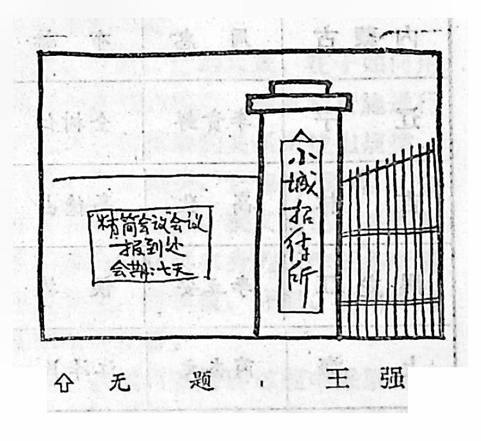

王强 《人事》1985年第2期（总第2期），第47页
无题
Untitled
- Text in the drawing
- 小城招待所 / 精简会议会议 报到处 会期：七天
Small Town Guesthouse / Conference on Streamlining Meetings — registration desk — length: seven days - Description
- At the gate of a guesthouse, a notice announces registration for a conference on streamlining meetings — lasting seven days.
- Artist
- Wang Qiang 王强
- Published in
- 《人事》1985年第2期（总第2期）, p. 47
- Themes
- Formalism · Bureaucratism

Cite
Wang Qiang, “无题” [Untitled], Renshi (Personnel) 《人事》, 1985, no. 2, p. 47.